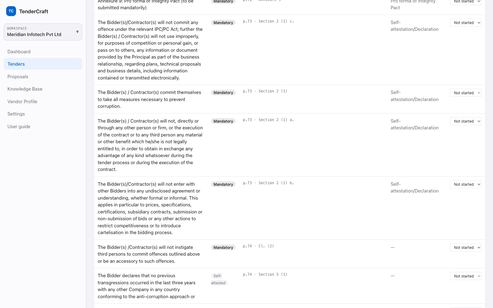

The clauses that decide whether your bid is even opened are buried inside it.
carried an obligation that no requirement covered yet
The gaps you would otherwise find after you lost.

What it cannot source, it flags. It never invents.
Try it on your own tender.